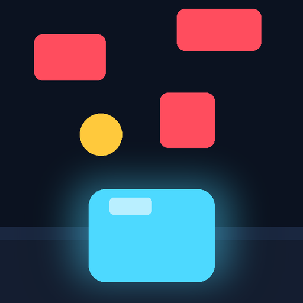
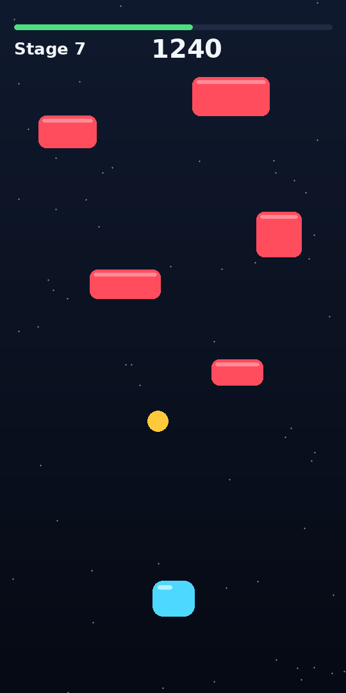

Slide. Dodge. Survive the fall.
Unlimited stages. No ads, no account, no internet. Under 2 MB.
Download the APK Android 7.0 and up. Or grab the latest build from the Actions tab.

Each stage is a short survival timer. Clear it and the next one begins with faster, denser blocks. There is no final stage, only the one you haven't reached yet. Your best score and best stage are saved on your phone.
| Block passes you | +1 |
| Near miss | +3 |
| Coin | +10 |
| Stage cleared | +100 |